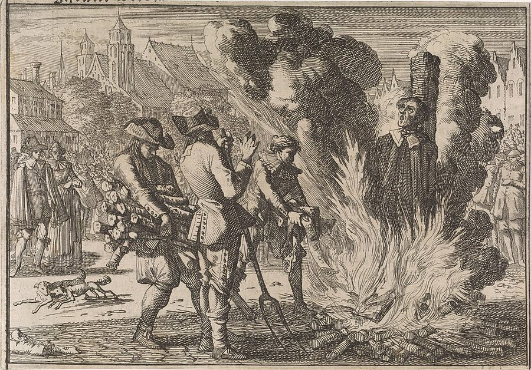
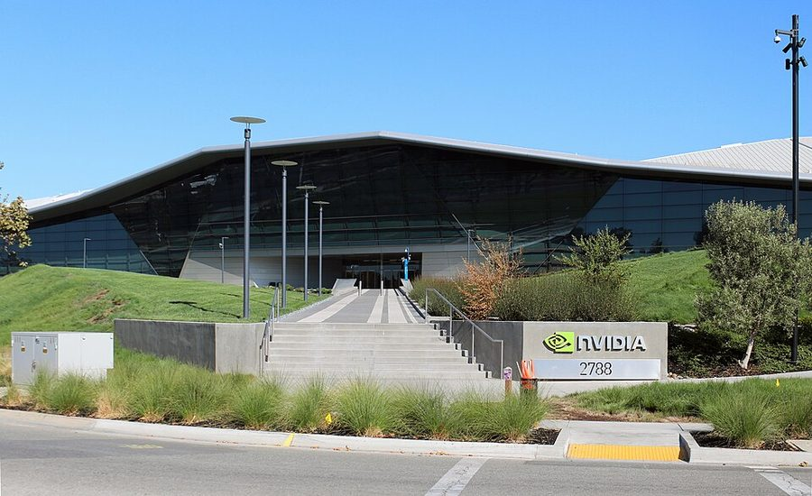
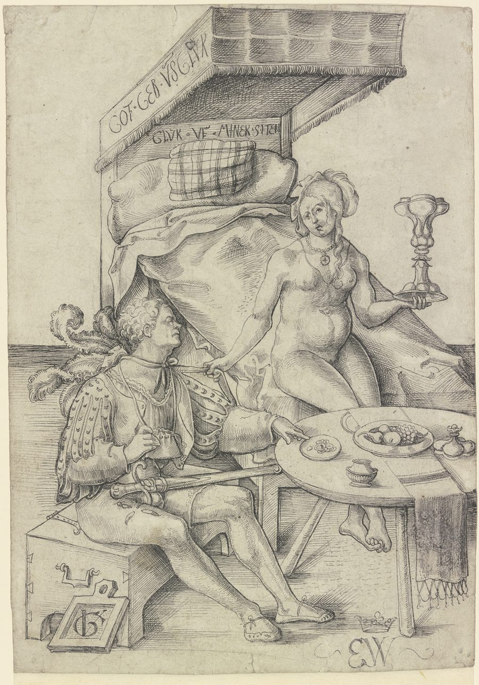

Машина · главное
Один миллиард по кругу
Совет директоров TSMC одобрил до 500 миллионов долларов в привилегированные акции OpenAI и ещё до 500 — в обыкновенные акции Anthropic по цене, по которой та рассчитывает провести размещение. Продавец кремния становится акционером своих покупателей.
Совет директоров TSMC одобрил две покупки по полмиллиарда: до 500 миллионов долларов — в привилегированные акции OpenAI, зарезервированные для крупных инвесторов, и ещё до 500 миллионов — в обыкновенные акции Anthropic по цене, по которой та рассчитывает провести первичное размещение. Суммарно это миллиард долларов, сообщил Reuters; The Wall Street Journal увидел в этом попытку дать рынкам «глоток уверенности».
Деньги у компании есть. За июль—сентябрь 2026 года TSMC заработала больше 23 миллиардов долларов прибыли — шестой рекордный квартал подряд. Её заводы физически выпускают подавляющую часть чипов Nvidia для дата-центров и большую часть заказных чипов Apple, включая сервер для её ИИ-нагрузок. Фабрики стоят на Тайване, в Японии и Китае, строится кластер в Аризоне и новый завод в Германии.
Круг замыкается так. TSMC продаёт кремний OpenAI и Anthropic — те строят на нём дата-центры. Чипы для этих дата-центров проектирует Nvidia, а делает их снова TSMC. Теперь TSMC покупает долю в тех, кто платит ей за пластины. Аналитики, на которых ссылается WSJ, предупреждают прямо: круговое финансирование между инвесторами, поставщиками и покупателями мешает понять, какой спрос на ИИ-железо настоящий.
Масштаб для сравнения. Nvidia уже вложила 30 миллиардов долларов в OpenAI и 10 миллиардов в Anthropic, плюс десятки миллиардов в другие ИИ- и робокомпании. Миллиард TSMC на этом фоне — не самый большой круг, а самая показательная его часть: вложился не венчурный фонд и не конкурент, а единственный в мире подрядчик, без которого ни одна из сторон не может выпустить ни одного чипа.
Практический вывод для того, кто платит за токены. Пока круг растёт, вводные цены держатся низкими: часть денег возвращается в компании в виде инвестиций, а не выручки, и удешевление инференса отчасти оплачено капиталом, который пришёл с другой стороны стола. Когда круг перестанет расти — а он перестанет, потому что каждый оборот требует всё больше денег, — цена токена начнёт отражать стоимость железа, а не амбиции. Смотреть стоит на три числа: прибыль TSMC по кварталам, загрузку её новых фабрик в Аризоне и Германии и то, удержится ли Anthropic на заявленной цене размещения. Эти три числа честнее любого обещания «удешевить инференс в десять раз».
Коротко
- Суммадо $1 млрд: по $500 млн в OpenAI и в Anthropic
- Форма сделкиOpenAI — привилегированные акции для крупных инвесторов; Anthropic — обыкновенные по ожидаемой цене IPO
- Прибыль TSMCбольше $23 млрд за июль—сентябрь 2026, шестой рекордный квартал подряд
- КругNvidia уже вложила $30 млрд в OpenAI и $10 млрд в Anthropic
- Предупреждениеаналитики WSJ: круговое финансирование мешает оценить реальный спрос на ИИ-железо
Что здесь факт, а что — обещание
Факт: совет директоров TSMC одобрил две инвестиции до $500 млн каждая — это решение компании, о котором сообщил Reuters.
Факт: TSMC заработала больше $23 млрд за квартал и выпускает чипы и для Nvidia, и для Apple.
Факт: Nvidia уже вложила $30 млрд в OpenAI и $10 млрд в Anthropic — это публично известные суммы, а не оценка.
Не факт: что сделка «спасёт» ИИ-торговлю. «Глоток уверенности» — формулировка WSJ о возможном эффекте на настроения, а не прогноз цены акций.
Не факт: что спрос искусственный. Круговое финансирование затрудняет оценку спроса; оно не доказывает, что спроса нет.
Не факт: что цены на токены теперь пойдут вниз — или вверх. Направление зависит от загрузки фабрик и от того, кто первым перестанет вкладывать в своих же покупателей.
Кино
Второй материал · 6 минутПятьдесят пять лет в чулане
«Дьяволов» Кена Расселла выпустили в 1971-м изрезанными, а потом на полвека спрятали. В 2026-м студия сама сделала 4K-реставрацию — и фильм собрал почти два миллиона долларов за неделю показов, которые теперь продлили бессрочно.

История началась в 1969 году, когда United Artists попросила Кена Расселла экранизировать пьесу Джона Уайтинга «Дьяволы» — переделку книги Олдоса Хаксли «Луденские бесы» о деле священника Урбена Грандье, сожжённого в 1634 году по обвинению в колдовстве. Сценарий привёл студию в ужас; проект подобрал Warner Bros., готовая выпустить религиозный фильм с антиавторитарным зарядом, графическим сексом и насилием. В конце шестидесятых это ещё считалось нормой кинопроизводства.
Дальше — хроника вырезания. Чтобы пройти британскую цензуру, Расселл сократил пыточные сцены и часть обнажённости. Warner Bros. пошла дальше и вырезала две сцены целиком, потом были новые сокращения ради рейтинга X, а затем ради R. Режиссёр считал, что ему сломали не отдельные кадры, а смысл: без этих сцен остаётся не притча о власти, а набор мерзостей.
Студия не просто порезала фильм — она десятилетиями не давала его смотреть. Полная версия почти не выходила на носителях, не показывалась по телевидению и редко появлялась в кинотеатрах; если появлялась, то в урезанном виде. Главным защитником картины стал писатель и документалист Марк Кермоуд, годами добивавшийся, чтобы студия выпустила оригинал.
В 2026-м Warner Bros. объявила, что 4K-реставрация готова: премьера в Канне, потом ограниченный прокат. Дальше случилось то, чего не ждали даже фанаты. За одну неделю показов фильм собрал почти два миллиона долларов; студия и её подразделение Clockwork расширили прокат, а затем продлили его бессрочно — «Дьяволы» идут в мультиплексах. Аудитория оказалась моложе, чем можно было предположить: кадры с Оливером Ридом расходятся в соцсетях, у фильма появился новый трейлер и постер с обугленной бедренной костью. 20 апреля 2027 года выходит физическое 4K-издание.
Редакционный вывод. Пятьдесят пять лет фильм существовал не как произведение, а как слух: все знали, что он есть, и почти никто не мог его увидеть. Право держать картину в чулане — это тоже право рассказывать её историю, и студия пользовалась им с равным успехом и в цензуре, и в молчании. Для того, кто пишет сам: произведение, которое не показывают, всё равно обрастает легендой — только распоряжается этой легендой не автор. Поздний показ возвращает её ему.
Машина
Заметка · 4 минутыТридцать процентов на выживание
Совет директоров Nvidia готовится снять Дженсена Хуанга — основателя, который руководит компанией 33 года. Акции потеряли больше 7 процентов после закрытия торгов, а плана преемственности у компании нет.

В ночь на 12 ноября The Wall Street Journal сообщил: совет директоров Nvidia готовится отстранить Дженсена Хуанга и собирается встретиться «уже сегодня», чтобы решить его судьбу. Поводом стала публикация The New York Times о втором романе — с топ-менеджером компании, которая подчиняется ему напрямую. Неделей раньше Хуанг признал связь с женщиной, которую американская разведка подозревает в работе на Китай.
Рынок отреагировал быстрее компании. Акции упали более чем на 7 процентов на вечерних торгах в среду. На бирже предсказаний Kalshi шансы Хуанга сохранить пост до конца недели оценивали в 30 процентов. Nvidia уже наняла бывшего федерального прокурора Джона Х. Кима и его фирму Wachtell, Lipton, Rosen & Katz вести расследование — но, судя по сообщению, совет не собирается ждать его результатов.
Проблема не в морали, а в отсутствии замены. Хуанг основал компанию и руководит ею 33 года; у него 60 прямых подчинённых, а поста председателя совета директоров в Nvidia сейчас нет вообще. Публичного плана преемственности тоже нет — TechCrunch в среду честно назвал свой список кандидатов «салонной игрой»: Лиза Су из AMD, Эрик Шмидт, Лип-Бу Тан из Intel, Брет Тейлор из Sierra, Иан Бак, один из авторов CUDA.
Практический смысл для всех, кто платит за ИИ. Nvidia — тот контур, через который в OpenAI и Anthropic уже ушли 30 и 10 миллиардов; её чипы стоят в дата-центрах, чью аренду оплачивают токены. Смена CEO сама по себе не меняет ни одного чипа в стойке. Но она меняет цену капитала для отрасли: если инвесторы начнут считать Nvidia компанией с управленческим риском, дороже станет не только её акция, но и всё, что на неё завязано. Смотреть стоит на два числа — состоится ли решение совета и останутся ли в силе контракты на поставку, — а не на то, кто из списка кандидатов красивее звучит.
Сеанс
Заметка · 5 минутНаёмник, который рисовал то, что делал
Public Domain Review опубликовал эссе об Урсе Графе Старшем — швейцарском рисовальщике, который ходил в четыре военных похода, сидел в тюрьме за нападения и оставил одни из самых откровенных рисунков XVI века.

Урс Граф Старший родился в Золотурне около 1485 года, учился у отца-ювелира, работал рисовальщиком книг в Страсбурге и ювелиром в Цюрихе, а потом осел в Базеле и завёл собственное дело. В 1511-м женился на Сиббилле фон Брунн, через год родился сын. Примерно тогда же он начал уходить на войну: в 1511-м — в Рим с отрядом из Золотурна, в 1513-м — в Дижон, в 1515-м — под Мариньяно, в 1521-м — на Милан и Бикокку.
Дома он был известен хуже. Его неоднократно порицали и сажали: за побои жене, за прелюбодеяния и визиты к проституткам, за насмешки и клевету на горожан, включая священника, портного и каретника, за нападения — часто без видимого повода. В 1518 году он бежал из города после драки, в которой его противник остался калекой. Вернуться разрешили через год: городу был нужен резчик штемпелей для монетного двора, и талант Графа оказался сильнее его репутации.
Рисунок был его главным делом. Эссе Мии Токумицу разбирает то, за что его помнят: наёмники и проститутки, сатиры, похотливые монахи, шуты — сцены, где торг, насилие и желание сплетены в один узел. В рисунке «Наёмник и девушка» солдат держит кошель, женщина тянется к нему, и оба взвешивают риск: для него отказ — унижение, для неё согласие — беременность, болезнь или побои. У неё, замечает автор, есть ключи, тяжёлый кошель и кинжал — знаки хозяйки дома, то есть какая-то власть у неё всё же была.
Граф умер или исчез около 1528 года, когда ему было чуть больше сорока: документальные упоминания обрываются в 1527-м, а в октябре 1528-го Сиббилла вышла замуж снова. Кроме рисунков он оставил книжные иллюстрации, гравюры, витражи и ранние опыты в офорте — технике, которая только появлялась в 1510-х.
Редакционный вывод. Графа терпели, потому что он был незаменим, и это самая неприятная часть истории: талант выкупает поведение — у города, у монетного двора, у издателя. Для автора здесь есть и другая, более полезная мысль: он рисовал то, что видел вблизи, а не то, что положено изображать. Откровенность его листов — не поза, а следствие того, что он действительно стоял в этом обозе.
Тело
Заметка · 4 минутыПещера без мужчин
В зубной эмали двадцати Homo naledi из пещеры Райзинг-Стар не нашли ни одного мужского маркера. Если это не совпадение, перед нами древнейшее известное погребение, отведённое только женщинам.
Пещера Райзинг-Стар в Южной Африке известна с 2013 года: в камере Диналеди нашли кости Homo naledi — вида, который жил примерно 335–241 тысячу лет назад и соединял в себе обезьяньи и человеческие черты. Все взрослые черепа из камеры были подозрительно похожи друг на друга, и больше десяти лет никто не мог объяснить, почему у этих людей почти нет различий между мужскими и женскими особями.
Ответ искали не в костях, а в белках. Международная группа с участием Университета Йорка и Копенгагенского университета собрала пептиды из зубной эмали, аккуратно вытравливая их кислотой, — метод, который почти не повреждает ископаемый материал. Всего исследовали 23 зуба, принадлежавших как минимум 20 особям, и искали амелогенин-Y — белок, который кодирует ген мужской Y-хромосомы.
Мужского маркера не оказалось ни в одном образце. Химики Йорка отдельно проверили аминокислоты и подтвердили, что белки действительно древние, а не современное загрязнение. Авторы работы, опубликованной в Cell, осторожны: отсутствие Y-хромосомы ещё не доказывает, что камера была женским погребением, — это гипотеза. Тем более что сама идея, будто Homo naledi хоронил своих мёртвых, оспаривается с 2023 года, когда вышла статья с прямым названием «Нет научных доказательств сложного символического поведения у Homo naledi».
Если гипотеза выдержит проверку, она стоит дорого: разделение умерших по полу — обычай, который до сих пор приписывали только людям современного типа. Доктор Марк Дикинсон из Йорка формулирует аккуратно: «Отсутствие мужских маркеров в группе действительно интригует. Это редкая возможность заглянуть не только в биологию предков, но и в то, как они жили».
Инструментарий
Заметка · 4 минутыДесять строк, которых хватило
Студия House House призналась, что чинила баг в Big Walk с помощью языковой модели: меньше 0,1 процента кода. Девятнадцать судей Independent Games Festival заявили, что не будут голосовать ни за одну игру с генеративным ИИ — в любом объёме.
Скандал зрел месяцами в закрытых чатах жюри, а на публику вышел в понедельник: 19 членов жюри Independent Games Festival из более чем пятидесяти подписали заявление, что отказываются голосовать за любую игру, где генеративный ИИ использован «в любом качестве». Свою позицию они объяснили ростом числа заявок, сделанных с ИИ, и его экологическими, экономическими и трудовыми издержками.
Во вторник выяснилось, о какой игре, среди прочих, идёт речь. Студия House House признала, что ближе к концу разработки Big Walk «языковые модели использовались умеренно» — чтобы разобраться со сложными техническими проблемами. Речь о баге движка Unity, из-за которого тени в некоторых ситуациях растягивались до бесконечности; инженер Unity сказал, что починить это невозможно, а чат-бот предложил решение, которое разработчикам пришлось «существенно переделать», — в финальную игру вошли десять строк кода. По оценке студии, это меньше 0,1 процента кода игры.
Студия объяснила, почему не сказала раньше: Valve не требует раскрывать использование чат-ботов для кода — её форма касается сгенерированного контента, а не «выигрыша в эффективности». IGF такой разницы не делает, поэтому House House указала ИИ в заявке на премию. В публичном заявлении студия отдельно оговорилась: «Это не поддержка и не аргумент в пользу ИИ-инструментов, пусть и минимальных», — и признала, что добровольные признания сами по себе нормализуют технологию.
Для судей это оказалось больнее, чем для студии: несколько человек публично написали, что Big Walk была для них важной игрой. «У нас рука на рычаге, — написал судья Дэймон Рис. — Эта боль должна случиться, чтобы попытаться увести нашу культуру в сторону от этого». Годом раньше отдельная премия Indie Game Awards отозвала награды у Clair Obscur: Expedition 33, когда разработчики признались, что часть текстур сделана с помощью ИИ.
Редакционный вывод. Норму раскрытия сейчас пишут не законы и не платформы, а жюри маленьких премий — те, у кого нет бюджета, но есть слово. Практический вывод для того, кто пишет книги с ИИ-помощью: решать, где ваша граница признания, лучше заранее и до публикации. Десять строк в игре на несколько лет разработки стоили студии репутационной бури; в романе такая же арифметика будет выглядеть иначе, но вопрос зададут тот же.